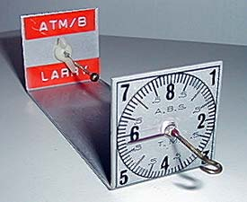

Jim Jones Torque Meter |
Jim Jones offered a number of useful tools for the Free Flight modeler in the past. Shown at left is one of his stationary torque meters. While no longer available, I am leaving this page intact to provide inspiration for those inclined to try their own hand at making a torque meter. Copyright 1999-2016, Thayer Syme.
|
|---|---|